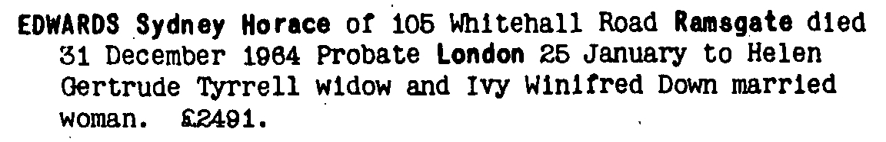

Sydney Horace Edwards 1884 - 1964
[ Home ] | [ Calendar ] | [ Surnames Index ] | [ Family History ]The son of Stephen Edwards (a stationery engine driver) and Ann LasslettSydney Edwards, the first cousin three-times-removed on the mother's side of Nigel Horne, was born in St Lawrence, Thanet, Kent, England on Nov 21, 18841,2.
Sydney spent all of his life in Kent, England. Throughout his life, he lived in several places around the county: in West Dumpton, Thanet, Kent, England on Apr 5, 18915; at Waterworks Cottage, St Lawrence in Thanet on Mar 31, 19016; on Waterworks House, Southwood Road, St Lawrence in Thanet on Apr 2, 19117; and at 105 Whitehall Road, Ramsgate on Sep 29, 19391, when he was living with his sister, Helen Gertrude, in 19554 and in 1964.
He died on Dec 31, 1964 in Thanet3.
Parents
- Stephen was born in Apr/may/jun 1847
- Ann Maria was born c. 1849
Citations
- 1939 Register - Findmypast (was the head of the household Incapacitated (Blind))
- England & Wales births 1837-2006 - Findmypast
- England & Wales deaths 1837-2007 - Findmypast
- 1955 Kelly's Thanet Directory
- 1891 England, Wales & Scotland Census - Findmypast (was age 6 and the son of the head of the household)
- 1901 England, Wales & Scotland Census - Findmypast (was age 16 and the son of the head of the household)
- 1911 Census for England & Wales - Findmypast (was age 26 and the son of the head of the household. bad sight from birth)
Media
Sydney Edwards - probate

1891 UK Census

1901 UK Census

England & Wales births 1837-2006 - BMD/B/1884/4/AZ/000175/149
England & Wales deaths 1837-2007 - BMD/D/1964/4/AZ/000250/107
1939 Register Transcription - TNA-R39-1765-1765A-018-30
1911 Census for England & Wales - GBC/1911/RG14/04527/0555/3
1901 England, Wales & Scotland Census - GBC/1901/0007458561
1891 England, Wales & Scotland Census - GBC/1891/0005906628
Family Tree

Generated by ged2site. Last updated on Nov 13, 2024